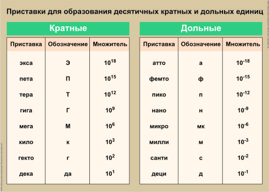

Таблица СИ, приставки
Международная система единиц (СИ)
| Наименование величины | Единица измерения | Сокращенное обозначение единиц измерения |
| Длина | метр | м |
| Масса | килограмм | кг |
| Время | секунда | с |
| Сила электрического тока | ампер | А |
| Термодинамическая температура | градус Кельвина | К |
| Количество вещества | моль | Моль |
| Сила света | кандела | кд |
| Плоский угол | радиан | рад |
| Телесный угол | стерадиан | стер |
| Площадь | квадратный метр | м |
| Объем | кубический метр | м |
| Плотность | килограмм на кубический метр | |
| Скорость | метр в секунду | |
| Угловая скорость | радиан в секунду | |
| Частота | герц | Гц |
| Ускорение | метр в секунду за секунду | |
| Сила | ньютон | Н |
| Давление | паскаль | Па |
| Работа, энергия, количество теплоты | джоуль | Дж |
| Мощность | ватт | Вт |
| Удельная теплоемкость | джоуль на килограмм на кельвин | |
| Удельная теплота плавления, парообразования, сгорания топлива | джоуль на килограмм | |
| Электрический заряд | кулон | Кл |
| Емкость | фарад | Ф |
| Напряжение, потенциал | вольт | В |
| Сопротивление | ом | Ом |
Приставки
